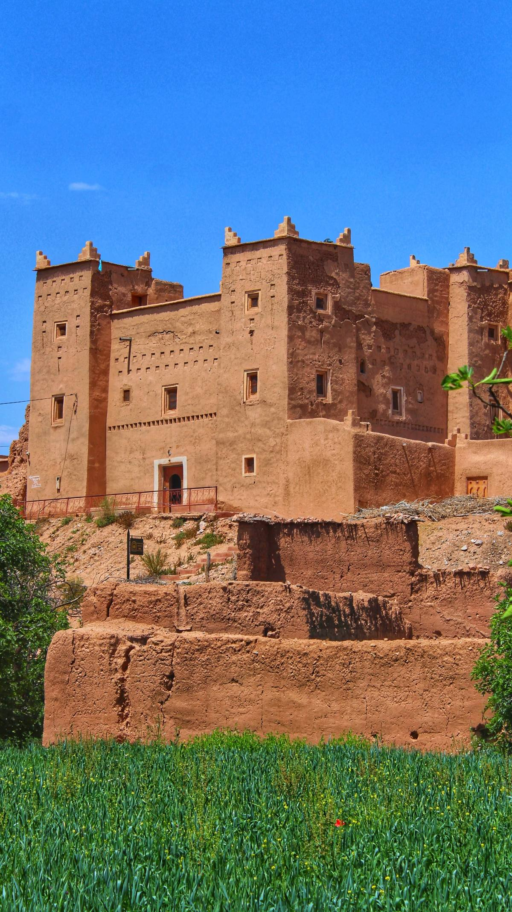
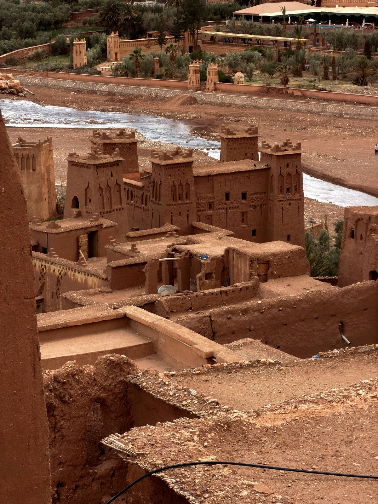

Ouarzazate : Porte du Désert
Studios de cinéma, kasbahs et carrefours de caravanes : la ville du sud traversée par toutes les routes du Sahara.
Hollywood aux confins du Sahara
Ouarzazate s'est développée là où les routes de l'Atlas rencontrent les pistes du désert – une ville de garnison devenue capitale du cinéma, surnommée le Hollywood du Maroc. Ses studios accueillent des épopées dans le désert depuis des décennies, et leurs décors (temples égyptiens, monastères tibétains) sont toujours exposés au soleil en dehors de la ville, visitables lors de visites guidées des studios.
En ville, le Kasbah de Taourirt - autrefois palais des dirigeants du Glaoui - montre à quoi ressemble l'architecture en terre du sud à grande échelle : des couloirs en forme de labyrinthe, des plafonds peints et des vues sur les toits de l'oasis. Et à 30 km en amont se trouve l'ancienne route des caravanes Aït Benhaddou, le ksar classé au patrimoine mondial de l'UNESCO, chaque itinéraire sud s'associe à Ouarzazate.
Pour les voyageurs, Ouarzazate est avant tout un carrefour : au nord par le Tizi n'Tichka jusqu'à Marrakech, à l'est par le Vallées du Dadès et du Todra, au sud le Draa jusqu'à Zagora, au sud-est jusqu'à Merzouga. La plupart des voyages au Sahara dorment ici ou passent par là – cela vaut une demi-journée et non une semaine.


Où c'est
Au sud du Haut Atlas, entre Marrakech et le Sahara. Faites glisser pour explorer.
Points forts
- Studios de cinéma — visites guidées de plateaux de travail à la lumière du désert.
- Kasbah de Taourirt — labyrinthe de palais, pièces peintes et toits d'oasis.
- Aït Benhaddou — le ksar de l'UNESCO, à une demi-heure de route.
- Oasis de Fint — palmeraies et lieux de déjeuner à quelques minutes de la ville (demandez à votre chauffeur).
- Arrêt de nuit — des hôtels confortables en font la pause naturelle entre Marrakech et les dunes.
Traversez le sud avec nous
Ouarzazate figure sur nos itinéraires Zagora, Merzouga et Classic — ou comme étape sur votre itinéraire personnalisé.